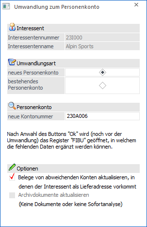
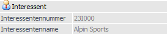
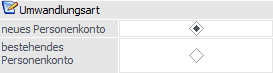
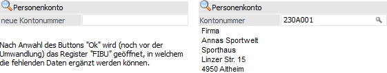
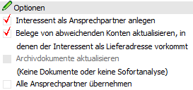
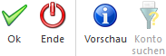
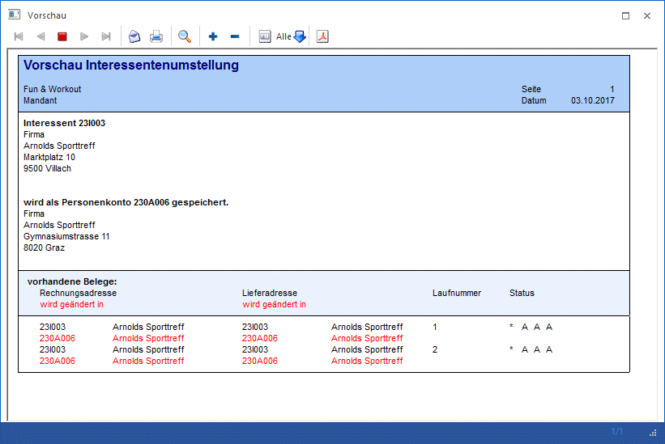

In der Interessentenverwaltung kann ein bestehender Interessent mit Hilfe des Buttons "in Personenkonto umwandeln" in ein bestehendes oder ein neues Personenkonto umgewandelt werde. Die notwendigen Einstellungen hierfür müssen in dem automatisch aufgehenden Fenster "Umwandlung zum Personenkonto" getroffen werden.

Folgende Eingabefelder, Einstellungen und Informationen stehen zur Verfügung:
Interessent

Ø Interessentennummer
An dieser Stelle wird die Interessentennummer des umzuwandelnden Interessenten angezeigt.
Ø Interessentenname
Hier wird der Name des Interessenten dargestellt.
Umwandlungsart

Ø neues Personenkonto / bestehendes Personenkonto
An dieser Stelle muss gewählt werden, ob der Interessent in ein neues Personenkonto gewandelt oder zu einem bestehenden hinzugefügt werden soll.
Personenkonto

Abhängig von der Einstellung "Umwandlungsart" kann in diesem Bereich eine neue oder eine bestehende Personenkontonummer angegeben werden.
Ø neue Kontonummer
Da ein neues Personenkonto angelegt werden soll, muss an dieser Stelle die Debitorennummer bzw. Kreditorennummer angegeben werden, unter welcher der Interessent gespeichert werden soll.
Hinweis
Wenn die nächste freie Kontonummer nicht bekannt ist, so können die ersten stellen der Kontonummer eingegeben werden. Durch Drücken der + - Taste sucht die WinLine die nächste freie Nummer. Wurde für Personenkonten ein Nummernkreis angelegt, dann kann hier durch Eingabe des Nummernkreises und Drücken der + - Taste die nächste freie Kontonummer gefunden werden.
Beispiel
In den FIBU-Parametern wurde der Debitorenkreis zwischen 230000 und 239999 definiert. Es wurden bereits die Konten bis zur Nummer 238794 angelegt. Wird nun die Nummer 230000 eingegeben und die +-Taste gedrückt, erhält man als nächste freie Nummer 238795.
Ø Kontonummer
Wenn sich z.B. ein Kunde über die WinLine WEBEdition angemeldet hat und seine eigene Kundennummer nicht wusste, so ist es im späteren Verlauf notwendig, den entstandenen Interessenten mit dem bestehenden Personenkonto zu verschmelzen.
In solch einem Fall wird hier die bereits vorhandene Kontonummer eingetragen, zu welcher der Interessent zugeordnet werden soll.
Hinweis
Wenn der Interessent in der WinLine WEB Edition angelegt wurde und dort eine bestehende Kontonummer eingetragen hat, wird diese in das Eingabefeld kopiert.
Optionen

Ø Interessent als Ansprechpartner anlegen
Der Interessent wird als Ansprechpartner des ausgewählten Kontos gespeichert. Als "Firmenname" wird hierbei der Name des Zielkontos verwendet.
Hinweis
Die Option steht nur zur Verfügung, wenn der Interessent in ein bestehendes Personenkonto gewandelt wird.
Ø Belege von abweichenden Konten aktualisieren, in denen der Interessent als Lieferadresse vorkommt.
Wenn Belege für ein anderes Personenkonto vorhanden sind, bei denen der Interessent als Lieferadresse hinterlegt wurde, so wird bei Aktivierung dieser Checkbox der gesamte Beleg auf das ausgewählte Personenkonto geändert. Dieses gilt für Angebote und Aufträge, solange keine Teillieferungen vorhanden sind!
Ist die Checkbox nicht aktiv, so bleibt der Beleg beim ursprünglichen Personenkonto, die Lieferadresse wird jedoch auf das neue Personenkonto geändert.
Hinweis
Alle Belege, welche direkt für den Interessenten geschrieben wurde, werden immer angepasst, d.h. die Interessentennummer wird durch die Personenkontennummer ersetzt!
Ø Archivdokumente aktualisieren
Wenn diese Checkbox aktiviert ist, dann werden - sofern für den Interessenten bereits Archiveinträge vorhanden sind - ebenfalls mit der (neuen) Kontonummer des Personenkontos versehen.
Hinweis
Diese Option kann nur dann aktiviert werden, wenn in den Archiv-Parametern die Optionen "Dokumente in Datenbank speichern" und "Sofortanalyse" aktiviert sind oder ein Archivdokument für den Interessenten existiert.
Ø Alle Ansprechpartner übernehmen
Durch Aktivierung dieser Option werden alle Ansprechpartner des Interessenten (außer dem Hauptkontakt; siehe Option "Interessent als Ansprechpartner anlegen") in das ausgewählte Personenkonto übernommen. Hierbei findet keinerlei Abgleich statt, d.h. die Nutzung der Option kann unter Umständen zu doppelten Ansprechpartnern führen.
Achtung
Findet keine Übernahme statt, so werden die Ansprechpartner des Interessenten nach Abschluss der Umwandlung gelöscht.
Hinweis
Die Option steht nur zur Verfügung, wenn der Interessent in ein bestehendes Personenkonto gewandelt wird.
Buttons

Ø Ok
Durch Anwahl des Buttons "Ok" bzw. der Taste F5 wird die Umwandlung vorgesetzt.
ü Umwandlungsart "neues
Personenkonto"
Es wird vor der endgültigen Wandlung in das Register FIBU der Interessentenverwaltung
gewechselt. Durch eine weitere Speicherung der Daten per Button "Ok" bzw. der
Taste F5 wird dann endgültig umgewandelt.
ü Umwandlungsart "bestehendes
Personenkonto"
Nach der Umwandlung wird, wenn der Button "Editieren" vor
Anwahl des Buttons "in Personenkonto umwandeln" gedrückt wurde, das zugeordnete
Personenkonto zur Bearbeitung geöffnet.
Hinweis
Bei der Umwandlung wird geprüft, ob ein zugehöriger WEBBenutzer (Interessent) in der WEBEdition angemeldet ist. Dazu ist in der WEBEdition das Datum der letzten Aktivität des Benutzers gespeichert. Ist dieses Datum leer oder älter als 2 Stunden (die Zeitspanne kann mittels "mesonic.ini"-Einstellung definiert werden), so kann der Interessent umgestellt werden. Ansonsten wird eine entsprechende Fehlermeldung ausgegeben und die Umstellung abgebrochen.
Ø Ende
Durch Anwahl des Buttons "Ende" bzw. der Taste ESC wird das Fenster geschlossen und somit die Umwandlung abgebrochen.
Ø Vorschau
Mit Hilfe des Buttons "Vorschau" werden alle Belege aufgelistet, die für den Interessenten geschrieben wurden und geändert werden.

Ø Konto suchen
Hier wird der erweiterte Kontenmatchcode geöffnet und die Adressdaten aus dem Interessentenstamm in die Suchfelder kopiert. Damit kann anhand der Adresse des Interessenten ein bestehendes Konto gefunden werden.
Hinweis
Die Checkboxen in der Spalte "Anzeigen" steuern, in welchen Feldern gesucht werden soll. Werden diese Checkboxen aktiviert bzw. deaktiviert, so wird diese Einstellung benutzerspezifisch gespeichert.